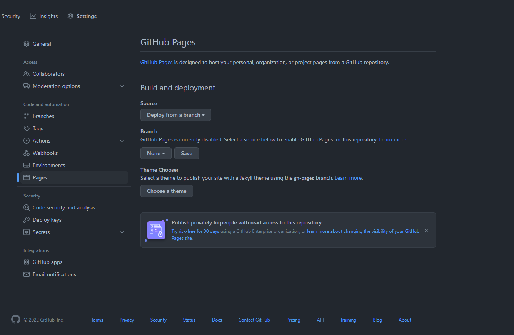
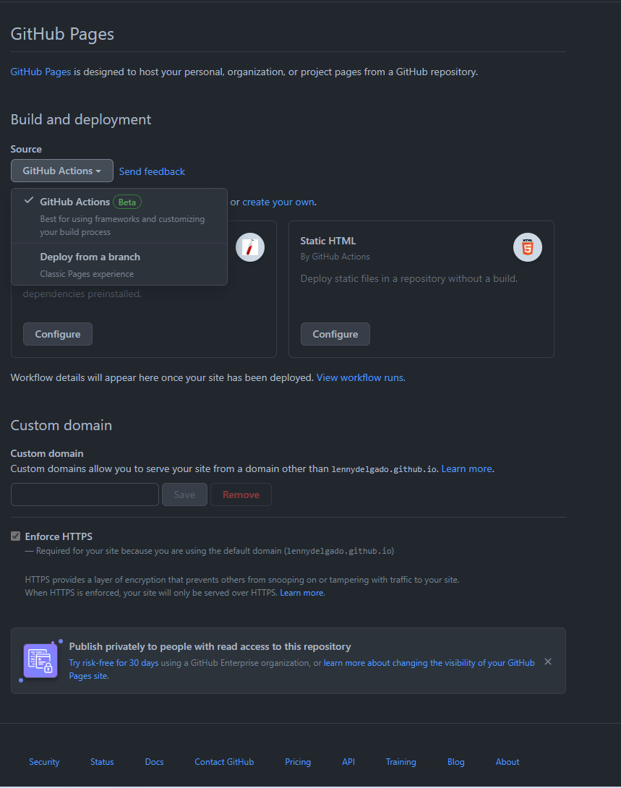
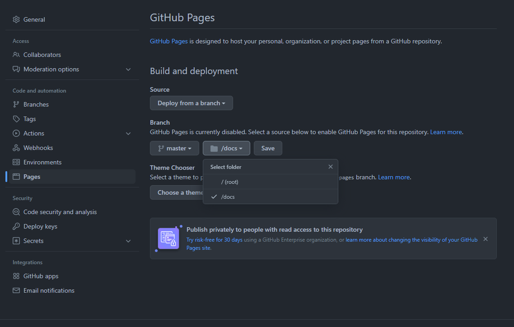
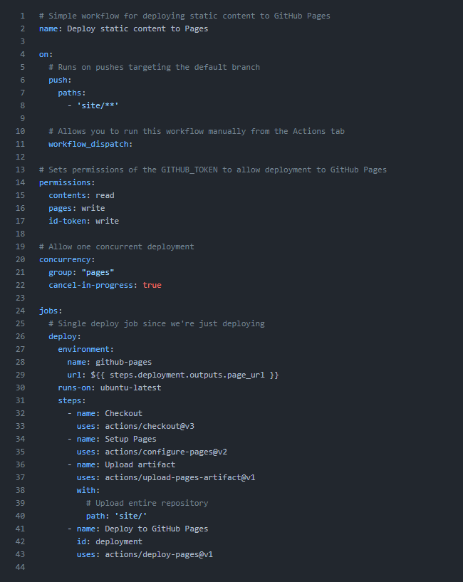

Introduction¶
Pour pouvoir mettre votre site sur GitHub Pages vous aurez besoin d’avoir crée un compte GitHub ainsi que crée votre répertoire qui va contenir votre documentation.
Note
Pour pouvoir utiliser GitHub Pages de manière gratuite il vous faudra obligatoirement un répertoire GitHub public. Pour mettre votre site en privée il vous faudra avoir un abonnement sur GitHub pour plus d’information rendez-vous ici.
Récupération du site¶
Si vous n’avez pas eu de problème lors du build, un nouveau dossier est apparu sur votre répertoire GitHub et il se nomme site.
Ce dossier contient toutes les pages HTML générées par MkDocs, si le dossier est bien présent nous pouvons passer à l’étape d’après sinon relancer vous-même une génération.
Mise en ligne sur GitHub Pages¶
Afin de mettre votre site sur GitHub Pages rendez-vous sur la page internet de votre répertoire puis dans settings puis dans pages comme ci-dessous.

Par la suite vous choisissez la méthode de déploiement par une GitHub Action et vous cliquez sur configure en dessous de Static HTML.

Vous devriez normalement tombez sur cette page.

Nous allons modifier ce fichier pour faire que dès lors on utilise Myd, la génération et la publication se fasse automatiquement lors d’une modification dans le dossier site. Il faut effectuer des modifications aux lignes 7 et 39 comme ci-dessous.

Vous pouvez enregistrer, grâce à ça dès que vous utiliserez à nouveaux Myd votre documentation seras mise à jour.